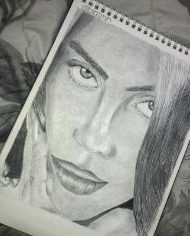
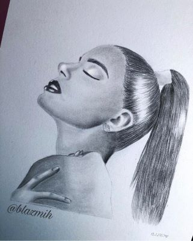
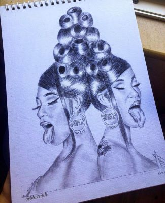
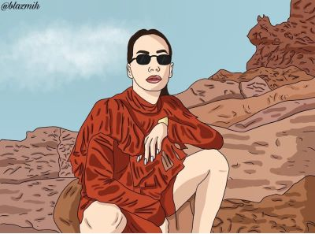
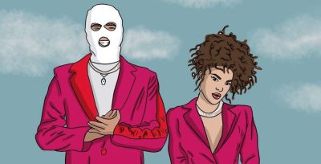

Hobby is an activity which we do to pass time with enjoyment. Basically, when we are free of our regular activities, we do something which we enjoy. This is called hobby. Hobbies are of different kinds. It depends on one’s likeness towards a hobby. People have hobbies like drawing, painting, photography and gardening etc. Every one of us likes to engage ourselves in some hobbies. Hobbies help one to remain active. Hobbies entertain us. They help people to be energetic all the time.
My favorite hobby is drawing. I always enjoyed drawing when I have free time. I started drawing at a young age. The first time I 've decided to draw, I couldn’t resist from not owning a few pencils and notebooks. I was so intrigued from the connection and satisfaction I felt when I first ran the pencil in that notebook, I believe it will always be a part of me.
I own Instagram page called Blazmih which counts 1300 followers. I usually draw portraits of famous singers.
    